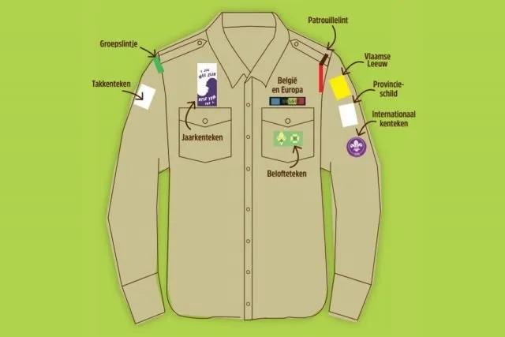

Uniform
Alles wat je moet weten over het scoutsuniform: wat heb je nodig en waar kan je het kopen?
Het basisuniform
Het basisuniform is voor Welpen, Kabouters, Jong-Gidsen, Jong-Verkenners, Gidsen, Verkenners, Jins en leiding hetzelfde:
- Beige hemd
- Groene trui
- Groene lange broek, korte broek of rok
- Riem
- Das en dasring
- Eventueel groene of beige kousen
Kapoenen
Kapoenen hebben geen voorgeschreven uniform. Het basisuniform is eventueel ook in kapoenenmaten beschikbaar.
Welpen
Welpen, zowel meisjes als jongens, kunnen een groene pet met gele biesjes dragen.
Kentekens op het hemd
Op je beige hemd bevestig je verschillende kentekens. Hieronder zie je waar elk teken thuishoort.
